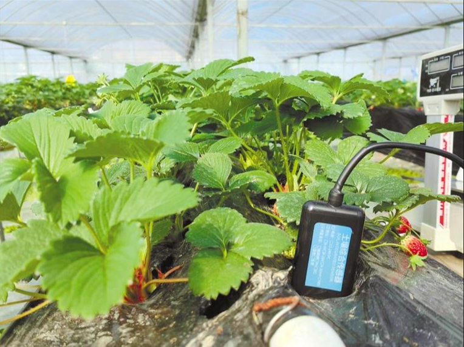

数据专题 · 03
环境监测一张图
返回门户实时
全园区
在线设备
124/128
▲ 2.1%
今日预警
6起
待处理 2
棚内均温 · 气
26.8℃
正常
棚内均湿 · 气
67%
适宜
CO₂ 均值 · 气
795ppm
正常
土壤含水量 · 土
56%
适宜
设备采集数据
传感器 · 棚内部署
8/8
气象监测4 路传感器
空气温度
AT-ALL-01 · 棚内均值
26.8℃
正常
空气湿度
AH-ALL-01 · 棚内均值
67%
正常
CO₂ 浓度
CO2-ALL-01
795ppm
正常
光照度
LUX-ALL-01
37.5klux
正常
土壤监测4 路传感器
土壤温度
ST-ALL-01 · 10cm 层
24.2℃
正常
土壤含水量
SM-ALL-01 · 10cm 层
56%
适宜
土壤 EC
EC-ALL-01 · 电导率
1.8mS/cm
正常
土壤 pH
PH-ALL-01
6.3
适宜
报警趋势（近 7 天）
温度类4
CO₂ 类1
湿度类1
分区大棚 · 监测设备点位
正常预警超限

N
0 ─ 100m
1#红颜26.1℃
2#章姬25.8℃
3#红颜32.0℃
4#淡雪26.4℃
5#白草莓CO₂↑
6#红颜土48%
育苗组培24.5℃
水肥首部EC1.8
点击棚位查看该棚土壤/气象实时数据 · 视频 · 历史曲线
视频监控接入
LIVE
CAM-ALL

REC
--:--:--
园区全景 · 制高点球机
CH01 · 1080P
土壤 · 气象 趋势
周
月
年
温度℃ (气象)
土壤含水量% (土壤)
30℃
联动控制
全园区顶风机关
外遮阳0%
卷帘关
补光灯关
指标达标率
气象 · 温度达标82%
气象 · 湿度达标96%
土壤 · 含水达标91%